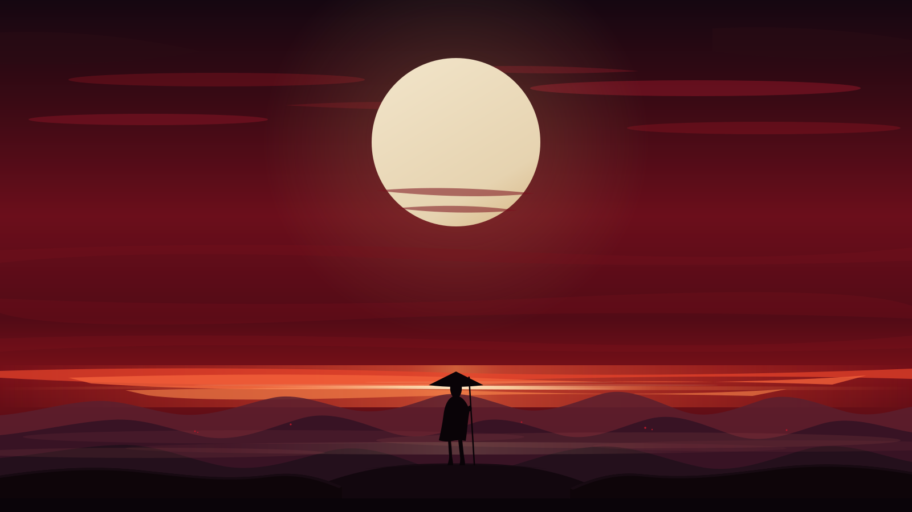
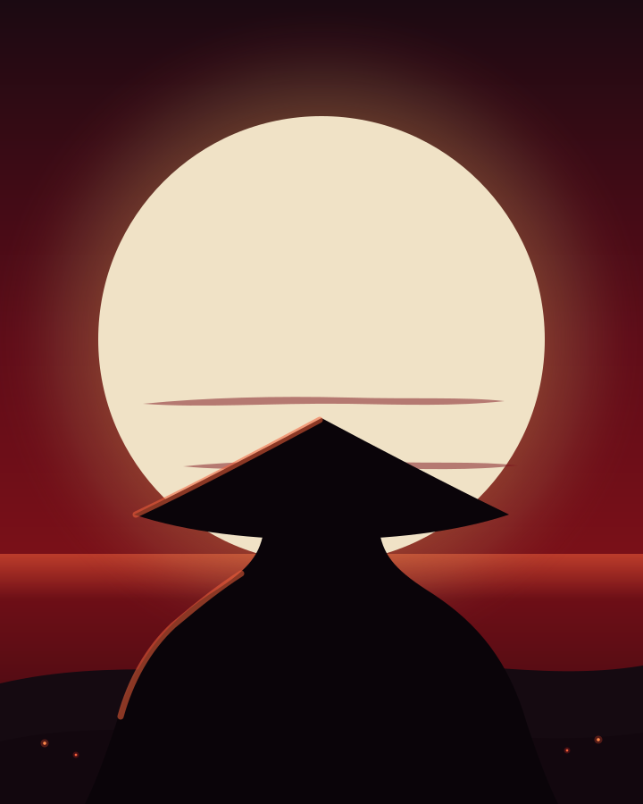

Medan, Indonesia --:-- WIB
Sistem yang dipakai orang,
bukan cuma demo.
Saya Rafif Syandana, software & web developer dari Medan. Saya membangun aplikasi untuk pelayanan publik dan UMKM — pelaporan warga, CRM, toko online — sampai utility desktop berbahasa Rust.
github.com/drexjgobgt
Halaman ini ditulis dengan HTML, CSS, dan JavaScript polos tanpa framework. Seluruh ilustrasi digenerate sebagai SVG lewat 9router.
01 — Karya terpilih
Enam proyek, enam masalah nyata.
Semuanya bisa dibuka publik di GitHub. Filternya bukan hiasan — klik untuk melihat mana yang web app, mana yang tool, dan mana yang bot realtime.
02 — Tentang
Suka bagian yang jarang terlihat.

Saya mengerjakan produk dari sisi yang paling berdampak: alur status, SLA, sinkronisasi data, dan keputusan kecil yang membuat aplikasi tetap enak dipakai ketika datanya berantakan. Bukan hanya layar yang bagus di screenshot.
Sistem pengaduan warga yang saya bangun harus mengarahkan laporan ke dinas yang tepat dan mengukur apakah penanganannya tepat waktu. CRM dan toko online untuk UMKM harus selesai lebih cepat dari catatan buku. Dan ClipFlow harus merekam gameplay tanpa menjatuhkan frame rate.
Saya nyaman berpindah lapisan: React dan Tailwind di depan, Node/Express atau PHP native di belakang, PostgreSQL/MySQL/MongoDB di penyimpanan, lalu sesekali turun ke Rust dan Windows API ketika masalahnya menuntut performa.
- Berbasis
- Medan, Sumatera Utara — GMT+7
- Fokus
- Aplikasi web untuk pelayanan publik dan UMKM
- Sehari-hari
- React & Tailwind, Node/Express, PostgreSQL, PHP native
- Eksperimen
- Rust & Tauri, bot Discord, computer vision di browser
- Sekarang
- Magang Customer Relations di PDAM Tirtanadi Sumatera Utara
03 — Keahlian
Tumpukan alat, dengan buktinya.
Daftar ini saya susun dari README dan riwayat repo publik, bukan dari daftar keinginan.
04 — Jejak
Garis waktu dari commit.
Urutan ini saya susun dari tanggal repo publik dan pengalaman kerja yang tercantum di profil profesional.
-
Sekarang
Magang Customer Relations — PDAM Tirtanadi Sumatera Utara
Menangani komunikasi pelanggan sekaligus menerjemahkan keluhan berulang menjadi kebutuhan produk. Banyak keputusan desain SIPW berangkat dari sini: status yang jelas dan estimasi waktu yang jujur.
-
2026
ClipFlow — instant replay untuk Windows
Utility desktop Rust + Tauri: frame game di-encode di GPU ke ring buffer RAM, lalu 15–120 detik terakhir disimpan sebagai MP4 lewat satu hotkey tanpa keluar dari game.
-
2025 — 2026
Sistem Informasi Pengaduan Warga
Platform pelaporan warga dengan penelusuran status, disposisi tugas lintas OPD, dan pemantauan SLA. Menghubungkan masyarakat dengan dinas seperti DLH dan PUPR dalam satu alur yang terukur.
-
2025
Perangkat untuk UMKM & eksperimen realtime
Mini CRM untuk menertibkan pelanggan dan follow-up, toko online distributor gas dengan Midtrans/QRIS, bot musik Discord yang dikendalikan dari live chat TikTok, serta eksperimen pelacakan tangan menjadi voxel 3D.